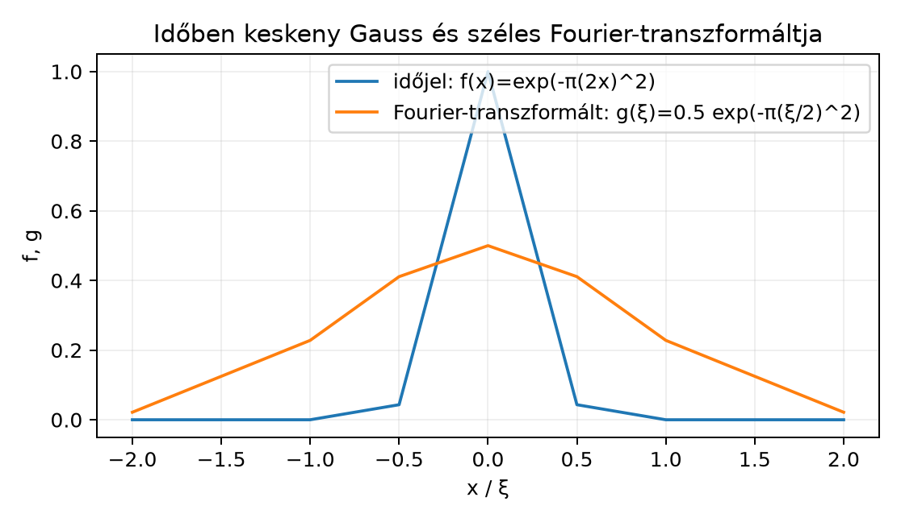

A Fourier-transzformáció egyik legismertebb tulajdonsága, hogy egy
függvény és a Fourier-transzformáltja nem lehet egyszerre tetszőlegesen
erősen lokalizált. Ha egy jel időben rövid, akkor a frekvenciatartalma
szükségképpen széles. Ez a fejezet ezt az állítást pontos, mennyiségi
formában bizonyítja a Schwartz-téren.
17.3.1 Motiváció
Tegyük fel, hogy egy
jelet szeretnénk egyszerre időben és frekvenciában is „keskennyé” tenni.
Ha az
függvény csak egy rövid időintervallumban különbözik nullától, akkor a
Fourier-transzformáltjának sok különböző frekvenciát kell tartalmaznia
ahhoz, hogy a gyors ki-/bekapcsolást reprodukálja. Fordítva, ha
keskeny, akkor
csak nagyon lassan változhat, tehát időben széles. A kérdés az, hogy
pontosan milyen alsó korlát áll fenn a két „szélesség” szorzata
között.
17.3.2 Szemléletes kép
Az alábbi ábrán egy időben keskeny Gauss-jelet és annak
Fourier-transzformáltját látjuk. A keskeny jelből széles, alacsony
frekvenciagörbe lesz.

Időben keskeny Gauss és széles
Fourier-transzformáltja - Kézzel számolt közelítő értékek a
Gauss-képletekből; a keskeny időjelhez széles frekvenciagörbe
tartozik.
A kék görbe csúcspontja
,
és már
-nél
gyakorlatilag nulla, tehát időben nagyon koncentrált. A narancssárga
Fourier-transzformált csúcspontja csak
,
és még
-nél
is
,
tehát frekvenciában sokkal szélesebb. A határozatlansági elv azt mondja
ki, hogy ez a jelenség nem véletlen: a két szórás szorzata nem
csökkenhet egy univerzális korlát alá.
17.3.3 A határozatlansági
egyenlőtlenség
A „szélesség” mérésére a súlyozott
-normákat
használjuk. Ha
normált, azaz
,
akkor
valószínűségi sűrűségfüggvényként is felfogható, és a nulla körüli
szóráshoz hasonló mennyiség
Hasonlóan a frekvenciaoldali szélesség
.
A pontos állítás a következő.
Tétel (Heisenberg-féle határozatlansági
egyenlőtlenség). Legyen
és
.
Ekkor
Egyenlőség pontosan akkor áll fenn, ha
valamilyen
és
esetén.
Továbbvitt eredmény. Ezt a tételt és a
Gauss-függvény extremális tulajdonságát használjuk a Összefoglalás: tételgyűjtemény, fogalomtérkép,
továbbtanulás alfejezetben; ott az is látható lesz, hogy a
-es
állandó a könyv Fourier-konvenciójához tartozik.
A bizonyításban három becslésnél lehet egyenlőség. A
Cauchy–Schwarz-egyenlőtlenségnél akkor van egyenlőség, ha az
és az
függvények arányosak, azaz
valamilyen
számmal majdnem mindenütt. Mivel Schwartz-függvényekről van szó, az
arányosság folytonosság miatt mindenütt fennáll. A parciális integrálás
utáni valósrész-becslésnél az egyenlőséghez az is kell, hogy az
arányossági tényező negatív valós legyen, tehát
Ekkor a differenciálegyenlet:
aminek általános megoldása
Így az egyenlőséget pontosan a
paraméterű Gauss-függvények adják.
A határozatlansági egyenlőtlenség jobb oldala ugyanekkora:
A Gauss-függvényre tehát egyenlőség áll, ahogy a tétel állítja.
17.3.6 Kitekintés:
kvantummechanikai értelmezés
A kvantummechanikában egy részecske állapotát egy normált
hullámfüggvény írja le, például
-térben
.
A hely szórása
az impulzus szórása pedig hasonló, a
Fourier-transzformáltjának szórásából számolható. Ha az impulzus
változóját
formában vezetjük be, a fenti matematikai egyenlőtlenségből
adódik, ahol
.
Ez a híres Heisenberg-féle határozatlansági reláció. A matematikai
állítás tehát nem mérési pontatlanságról szól, hanem arról, hogy a
hullámfüggvény és a Fourier-transzformáltja szórása között már
absztrakt, függvényelméleti okokból is feszültség van. Más
határozatlansági elveket, például a tartóra vonatkozó változatokat, itt
nem tárgyalunk.
17.3.7 Tipikus hibák és
félreértések
Fourier-konvenciók keverése. A könyv konvenciója
,
ezért az állandó
.
Ha valaki az
konvenciót használja, az állandó megváltozik. A tétel állandóját mindig
a megadott konvencióval együtt szabad használni.
A deriválási szabály konstansának elvesztése.
Sokan a
-t
tévesen
-vel
azonosítják. Valójában a könyv konvenciójával
és Plancherel miatt
.
A
elvesztése hibás állandóhoz vezet.
A Cauchy–Schwarz-lépés félreolvasása. A
parciális integrálás után az integrandus
.
Ha valaki
-et
próbálna külön normaként kezelni, akkor nem az
,
hanem egy nem kívánt
jelenik meg, és a bizonyítás nem működik.
A határozatlanság félreértelmezése. A tétel a
szórásokra vonatkozik, nem a tartó hosszára. Egy függvénynek lehet
kompakt tartója, és a Fourier-transzformáltja nem kompakt tartójú, de a
tétel ennél finomabb: a súlyozott
-szórások
szorzatát korlátozza.
17.3.8 Feladatok
1. (Fogalmi kérdés) A bizonyítás első lépésében
miért igaz, hogy
minden
esetén? Indokolja a Schwartz-tér definíciójával.
2. (Számolási feladat) Legyen
Számítsa ki a
,
a
és a
értékeket, majd ellenőrizze a határozatlansági egyenlőtlenséget erre a
Gauss-függvényre.
3. (Bizonyítási feladat) Igazolja a Plancherel-tétel
és a deriválási szabály segítségével, hogy minden
esetén
4. (Alkalmazás) Legyen
Számítsa ki a
és a
normák
-től
való függését. Mi történik a két normával, ha
?
Magyarázza, hogyan mutatja ez a határozatlansági elv működését.
17.3.9 Megoldások
1. Az
azt jelenti, hogy minden
egészre
Speciálisan
és
mellett létezik olyan
,
hogy
minden
-re.
Ebből azonban csak az következik, hogy
korlátos, ezért a határértékhez erősebb csökkenés kell. Használjuk az
esetet is: létezik
,
amelyre
azaz
Ekkor
és ez valóban nullához tart, ha
.
Így a parciális integrálásnál a határtag valóban eltűnik.
2. Először a normát számoljuk:
Az
képletet alkalmazva
-vel:
A súlyozott normához:
A
képlettel
A Fourier-transzformáltra a skálázási szabályból: ha
,
akkor
Így
A megadott képlettel
:
Ezért
A bal oldal:
A jobb oldal:
A két oldal egyenlő, tehát a Gauss-függvény itt is extremális.
3. A deriválási szabály szerint
Ezért
Négyzetre emelve és integrálva:
A Plancherel-tételből
,
tehát
Négyzetgyököt vonva:
4. Mivel
,
a skálázási szabály szerint
Először a normák:
A súlyozott időoldali norma:
A frekvenciaoldali súlyozott norma:
Itt
,
tehát
Szorozva
-nel:
Ha
,
akkor
A két szorzat négyzetére
tehát az
Gauss-függvényekre minden
-re
egyenlőség áll. Ez jól mutatja, hogy az időoldali szélesség csökkentése
szükségképpen a frekvenciaoldali szélesség növekedésével jár.
17.3.10 Rövid összefoglaló
Legyen
,
.
A könyv Fourier-konvenciójával a Heisenberg-féle
határozatlansági egyenlőtlenség:
A bizonyítás parciális integrálásból, a
Cauchy–Schwarz-egyenlőtlenségből, a deriválási szabályból és a
Plancherel-tételből áll. Pontosan akkor van egyenlőség, ha
valamilyen
és
esetén. A Gauss-függvényre, például
-re,
az egyenlőség közvetlen számolással is ellenőrizhető. Az eredményt a Összefoglalás: tételgyűjtemény, fogalomtérkép,
továbbtanulás alfejezetben használjuk újra.